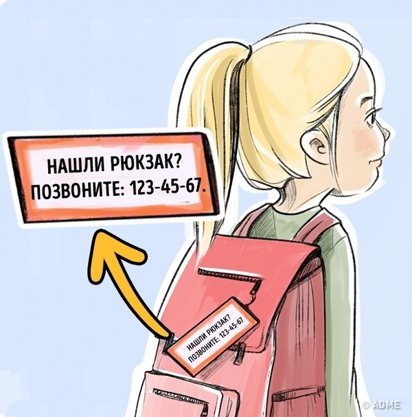
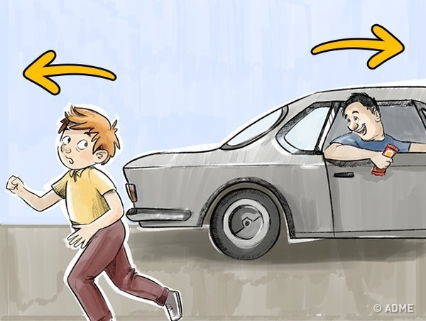
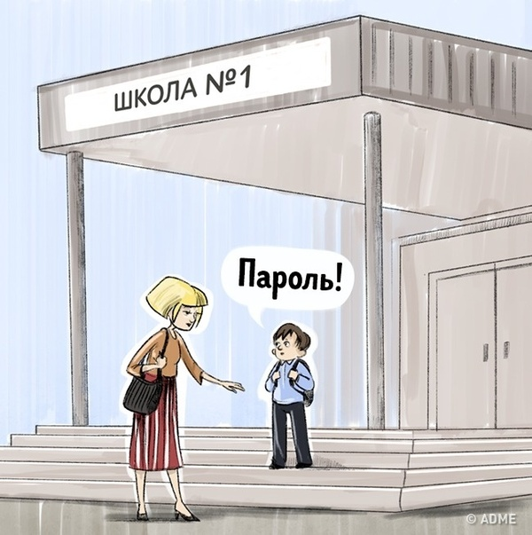
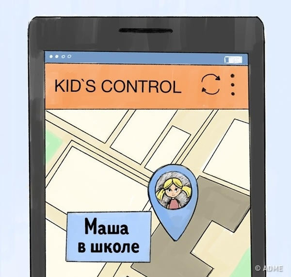
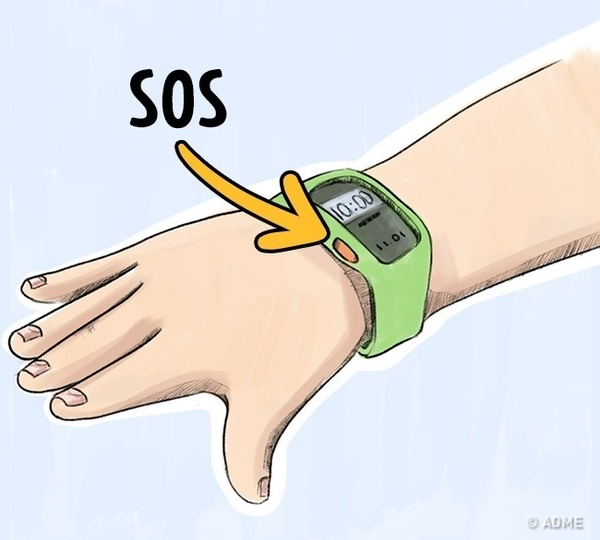
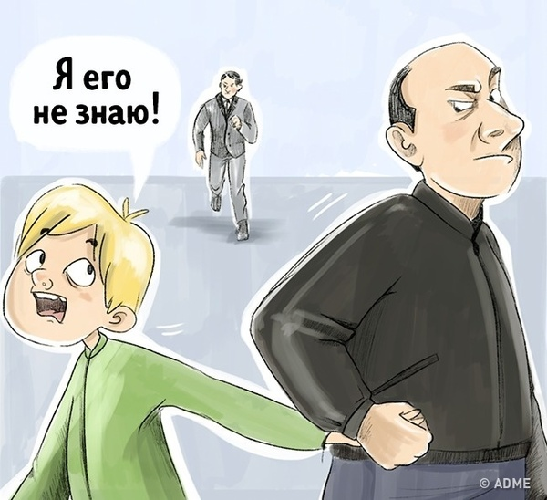
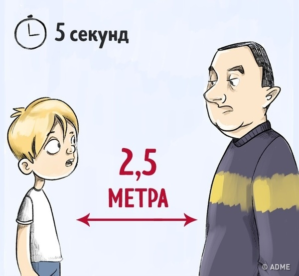
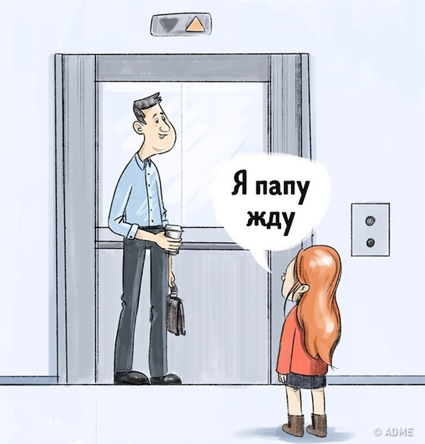
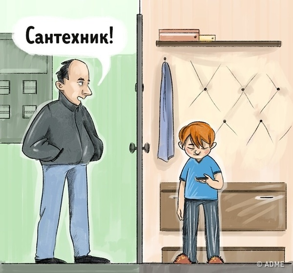
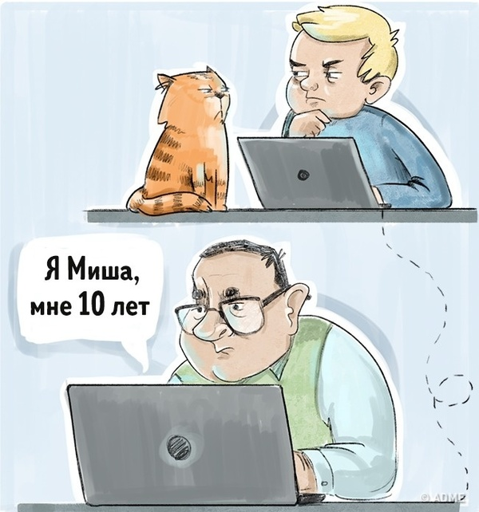

Правила безопасности, которые надо рассказать детям.
Вы можете показать эти иллюстрации своему ребенку и обсудить с ним все опасные ситуации.
При обсуждении с маленькими детьми потенциально опасных ситуаций уделите внимание образу незнакомца. Например, мой сын считал, что опасный человек - преступник - будет обязательно одет в полосатую робу (как у арестантов в мультиках) и у него будет злое лицо. И для ребенка было совершенным открытием, что злодеем может оказаться даже милая старушка с котенком.
1. Необходимо скрывать имя и фамилию

Не пишите имя и фамилию ребенка на его вещах, не вешайте именных брелоков на детский рюкзак, не подписывайте ланч-бокс или термос. Так его имя может узнать кто-то чужой. Если незнакомец обращается к ребенку по имени, он сразу вызывает у него доверие и дальше может манипулировать малышом.
Лучше напишите на бирке свой телефон — на случай, если вещь потеряется.
Подобные бирки с номерами телефонов (мой и жены) печатал на самоклейке и приклеивал с тыльной стороны пенала, телефона и чехла планшета.
2. Убегать от машин в обратном направлении

Мы учим детей не садиться в машину к незнакомцам — это правильно. Пусть ребенок усвоит еще одно правило: если возле него затормозила машина или она едет за ним, а кто-то из машины хочет привлечь его внимание, нужно быстро убегать в сторону, противоположную движению автомобиля. Это поможет ребенку выиграть время и обратиться за помощью.
3. Придумать пароль для семьи

Если незнакомец предлагает ребенку пойти туда, где его ждут мама или папа, пусть ребенок попросит его назвать имена родителей и пароль. Придумайте вместе с ребенком кодовую фразу для экстренного случая, если вдруг попросите кого-то из знакомых забрать ребенка из садика или школы. Пароль должен быть неожиданным, чтобы его невозможно было отгадать: например, «пушистый апельсин».
Об этом методе узнал недавно в художественном фильме. Девочка спросила незнакомых, что именно сказал папа, но не услышала секретную фразу.
Взрослые, кстати, тоже используют этот метод, например, при идентификации в службе поддержки банка.
4. Установить отслеживающие приложения или сигнал SOS в телефоне

Благодаря GPS-датчику приложение показывает координаты вашего ребенка и уровень заряда батареи его телефона.
Эти приложения можно установить ребенку на смартфон. Если не знаете, какие, сходите на авторитетный ресурс по мобильным устройствам, например, 4pda.ru/forum
5. Носить часы с тревожной кнопкой

Гаджеты с тревожной кнопкой бывают в виде часов, брелока, браслета или медальона. Родители через специальное мобильное приложение могут постоянно отслеживать местонахождение ребенка, а если он нажимает на кнопку, сигнал получают родители или служба безопасности.
Своему ребенку в начальных классах купил простенький телефон, в котором была функция SOS - надо было 5 раз нажать кнопку отбоя. Также телефон умел отправлять СМС на мой номер при смене симки - помогло когда ребенок потерял телефон, а его нашли, выкинули мою симку и вставили свою.
6. Кричать «Я его не знаю!»

Скажите ребенку, что если его схватил незнакомец, то можно и нужно быть «плохим»: кусаться, пинаться, царапаться и привлекать внимание любой ценой, даже если очень страшно. Нужно громко кричать: «Я его не знаю! Он хочет меня увести!»
7. Прекращать разговор и держать дистанцию

Ребенок должен знать, что незнакомцы могут заболтать не только детей, но и взрослых, поэтому важно быстро уйти в безопасное место уже через 5–7 секунд после начала разговора. Следует стоять от незнакомца на расстоянии 2–2,5 метров; если он приближается, нужно делать шаг назад. Вместе с ребенком отрепетируйте эту ситуацию, покажите дистанцию в 2 метра и предупредите, что во время беседы ее нужно сохранять.
8. Не заходить в лифт с незнакомцами

Научите ребенка ждать лифт спиной к стене, чтобы видеть всех, кто к нему подходит. И если это незнакомец или кто-то малознакомый, под любым предлогом не заходить с ним в лифт: делать вид, что что-то забыл, или идти к почтовому ящику. Если кто-то приглашает войти, лучший вариант — вежливо ответить, что родители разрешают ездить в лифте только одному или с соседями. Если незнакомец пытается затащить в лифт или зажать рот, нужно драться, кричать и кусаться.
Хороший пример - соседские дети никогда не зайдут в лифт с посторонними, даже со мной или моими детьми. Либо сами, либо со своими родителями.
9. Не говорить, что родителей нет дома

Если на вопрос «Кто там?» никто не отвечает или в глазке никого не видно, нельзя открывать дверь даже совсем чуть-чуть, чтобы посмотреть, кто это. Нельзя говорить, что родителей нет дома, даже если незнакомец представляется их другом или работником коммунальных служб. Если он очень настойчив и ломится в квартиру, нужно срочно звонить родителям или соседям.
Это известно с детства. Меня учили говорить "папа пришёл со смены и спит, будить нельзя".
10. Не встречаться с интернет-знакомыми

Предупредите ребенка о том, что в современном мире преступники могут найти свою жертву через интернет, и не всегда «Миша из соседнего дома» — это действительно соседский 10-летний мальчик. Безобидную переписку может вести опасный человек. Объясните, что нельзя сообщать незнакомым людям, даже детям, свой телефон, адрес, фамилию, посылать фотографии и рассказывать, когда и где любишь гулять. И тем более нельзя соглашаться на прогулку с незнакомым человеком. Это уже из современных реалий.
Иллюстратор Natalia Popova
Источник: adme.ru